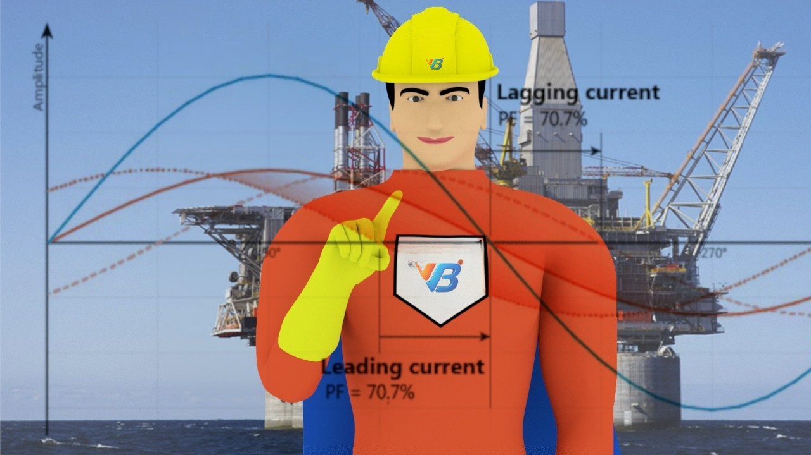

Core Advantages

Scope
Data collection, design, analysis, recommendations, and implementation. The total cycle of execution will be a single window solution for your load flow analysis service.
Read More

Standards & Compliance
We offer this service in compliance with CLASS, NEC, IEEE, IEEE and NFPA 70E international standards.
Read More